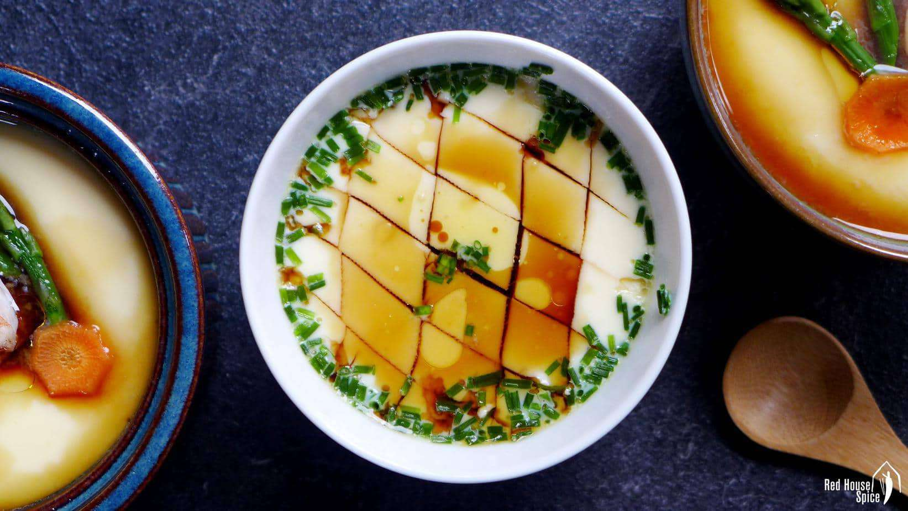

Best Steamed Egg Recipe Out There

Steamed Eggs, my mother's recipe
Steamed egg is a staple in our househould. Every 2 weeks my mom would cook this up for us to enjoy together.
The perfect combination of savory, silky, hearty egg to go with your rice as an everyday driver, enjoy!
Ingredients for half portion
- 3 eggs
- 1/2 can of chicken broth
- 1/2 tsp of soy sauce
- 1/2 tsp of sesame oil
Instructions
- Crack 3 eggs into a bowl and whisk until combined
- Add 1/2 can of chicken broth into the mix
- Steam it on low heat for 15-20 minutes
- Do not life the cover multiple times, trust that it will be cooked
- Once ready, slide your spoon in to check that it isn't too runny but isn't over cooked
- Drizzle some soy sauce and sesame oil on top and enjoy!
.